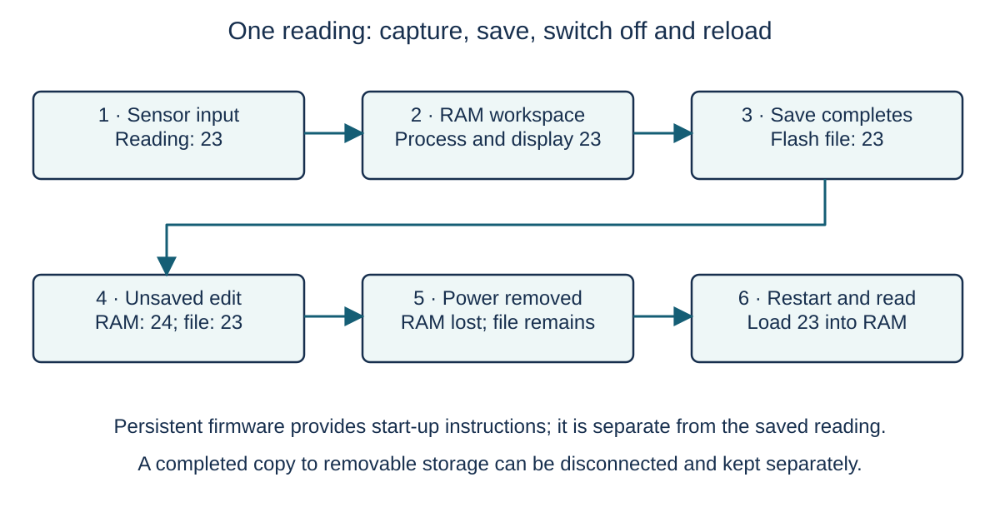

Hardware / 01
Record, use, save and play

Look closely
Why can an unsaved edit disappear while the saved recording survives?
A recorder saves a reading of 23. You change the displayed value to 24 but do not save again. The recorder then loses power. Follow the two values through the diagram before predicting what returns after restart.
Step 1 / 5
Get data into the system
The sensor supplies the reading: this is input. A button can also supply an instruction, such as Save. Input devices give the computer data or instructions from outside it. The processor follows the recording program and works on the incoming data.
Step 2 / 5
Keep the current work close to the processor
The processor needs instructions and data while it works. Primary memory provides this directly accessible working resource. RAM holds changing values such as the current reading. ROM can hold instructions that must survive power loss. Primary memory is not another name for volatile memory.
Step 3 / 5
Make the result useful
The display presents the reading to a person: this is output. A speaker can produce sound, and a motor can produce movement. An output device communicates a result or causes an action. A touchscreen combines output from its display with input from its touch sensor.
Step 4 / 5
Separate working data from a completed save
Saving writes a persistent copy to secondary storage, such as flash storage or a hard disk. A completed save of 23 stays there after shutdown. Changing a RAM value to 24 changes the current work; it does not automatically replace the saved copy. On restart, the recorder can load 23 again.
Step 5 / 5
Make a copy that can leave the system
Removable secondary storage can be disconnected and used to transfer a file or keep a separate copy. A USB drive copied after the completed save contains 23. It does not receive later edits while disconnected. The purpose is persistent storage and portability, rather than extra working RAM.
Explain it yourself · Teacher-written check
A saved sound file survives shutdown. Does that prove the RAM kept its contents?
Check your reasoning
No. The saved file is on non-volatile secondary storage. RAM loses its working contents without power; the computer can load the saved file into RAM after restarting.
Apply the idea · Teacher-written practice
Explain what a recorder can recover after this sequence: a reading of 31 is saved successfully, a RAM-only correction changes it to 32, and power is lost before another save. State what a separately completed removable copy made before the correction contains.
Answer and checking points — teacher-written
- The volatile RAM-only value 32 is lost when power is removed.
- The last completed saved file still contains 31.
- On restart, the recorder can load 31 into new working RAM.
- The separately completed removable copy also contains 31; it does not automatically receive later RAM edits.
Common error: A displayed or edited value is not necessarily the value last written to persistent storage.
Keep this idea
Input supplies data, the processor uses primary memory to work on it, output presents a result, and secondary storage keeps completed saves.
The same roles can fit inside a larger device, even when there is no visible desktop computer.
Learning goals
- Explain the need for input devices.
- Explain the need for output devices.
- Explain the need for primary memory.
- Explain the need for secondary storage.
- Explain the use of removable secondary storage.